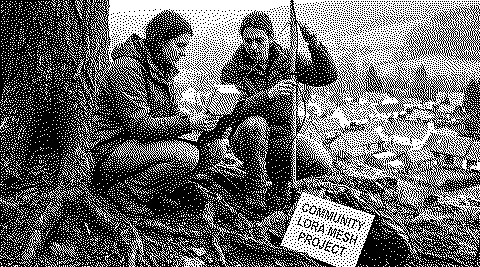

1. principles
The Permasoftware Assembly is an open platform. Low-footprint software is simple, durable, energy-light and repairable. Six principles guide each project:
- Simple. Use few parts and few dependencies.
- Durable. Make tools that work for many years.
- Energy-light. Use old hardware and small servers.
- Repairable. Publish the code. Write short instructions.
- Local-first. Keep the data with the group. Do not track people.
- Critical AI. Use AI only when it helps the group. Sometimes the better choice is no AI.
2. projects :: map
These projects exist now. They are the first parts of the platform. The projects connect in three branches: listen, decide and broadcast.
PERMASOFTWARE ASSEMBLY | +-------------------------------------------------+ | |
PERMASOFTWARE ASSEMBLY |
+-- // listen | || +-- AudioMoth scripts | | Scripts for field recordings from | | AudioMoth recorders. They find sound | | events, calculate acoustic indices and | | make a seasonal calendar. All | | processing is local, with no cloud. | | runs on :: a laptop, Bash, Python, | | ffmpeg | | >> bioacustic-scripts | | >> audiomoth-scripts | | -> BiocracyEngine | || +-- SoundWalk :: DerivaSonora | | A phone app for sound walks. Record | | sounds with their location, add notes | | and listen again on a map. It works | | offline: no account, no server, no | | tracking. | | runs on :: Android phones, browser | | >> biomapp.vercel.app | | >> code not public yet | | -> BiocracyEngine | || `-- BiocracyEngine | Live sound and image instrument: | forest sounds, a blockchain stream and | a multispecies parliament. | >> code ||+-- // decide | || +-- KLAP :: Klimat Action Protocol | | A free tool for group decisions. One | | person writes a claim. Other people | | add reasons: because, but, however. | | The tool shows where the group agrees. | | runs on :: Django, Docker, your own | | server | | >> klap.altred.xyz :: code | | >> based on arguman.org | || `-- DIAP | Design for a community DAO for land | governance. It uses low-energy | blockchains. | >> code | -> BiocracyEngine ||
+-- // broadcast | || +-- Telegram group | | -> LiquidIce | | <-> iScream (IRC) | || +-- LiquidIce | | A Telegram bot for a group. Members | | send photos, texts, audio and video. | | The bot makes a website archive and a | | radio stream. It keeps a copy on | | archive.org. | | runs on :: Raspberry Pi 3B+, | | Liquidsoap | | >> code not public yet | | >> first version Telegram2Icecast | | -> Icecast stream | || +-- iScream | | Go on air from a phone browser. You do | | not need an app or an account. The | | server keeps no audio and no access | | logs. A bridge connects the IRC chat | | and the Telegram group. | | runs on :: Node, ffmpeg, Ergo IRC | | >> reporta.altred.xyz | | >> code not public yet | | -> Icecast stream | || +-- Icecast stream | | -> Radiolibre | || `-- Radiolibre | A community radio on one small server. | Icecast sends the audio and a static | web player receives it. Listeners do | not need an account. | runs on :: one VPS, Icecast, nginx | >> radiolibre.altred.xyz :: code ||| | | | | | | | | | |
+------------------------+------------------------+
|
`.. next
Reticulum · Telegram bots · local AI`.. next
Reticulum · Telegram bots · local AI
3. next
The next step is a network that does not need the internet or big companies.
- Reticulum. A network stack for mesh networks. It works over LoRa radio, packet radio, Wi-Fi and the internet. Groups send messages without a central server.
- Telegram. Many groups use Telegram now. Bots stay the simple front door. Later, a bridge connects Telegram and Reticulum.
- Local AI. Small models run on the group's own hardware. Examples: speech-to-text for radio archives, summaries of KLAP debates. No data goes to a cloud.

4. people
- Alejandro Duque Jaramillo :: coordination. Swiss–Colombian artist. Linux and cultural management. Developer of KLAP and Radiolibre.
- Gonzague Rebetez :: AI advisor. New-media artist in Biel/Bienne. Co-founder of the art/science collective WÆXE.
- Creative Climate Changemakers Switzerland 2026 :: seed grant. Announcement by Stiftung Mercator Schweiz, 13 July 2026.
Join. Open an issue on GitHub. Tell us about your project and your software needs.